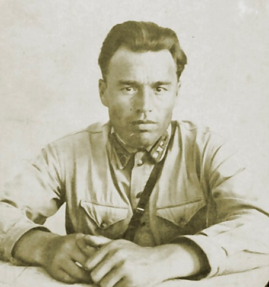
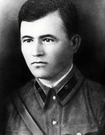
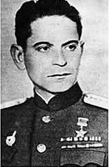

- Акимочкин Иван Филиппович
- Бытко Василий Иванович
- Виноградов Анатолий Александрович
- Гаврилов Петр Михайлович
- Зубачев Иван Николаевич
- Кижеватов Андрей Митрофанович
- Матевосян Самвел Минасович
- Мясников Михаил Иванович
- Наганов Алексей Федорович
- Нестерчук Николай Васильевич
- Потапов Александр Ефремович
- Санин Александр Степанович
- Семененко Александр Иванович
- Фомин Ефим Моисеевич
- Черный Аким Степанович
- Шабловский Владимир Васильевич
- Шугуров Алексей Клементьевич
Акимочкин Иван Филиппович (1910–1941)
×Родился в д. Крутое Людиновского района Калужской области (Россия) в крестьянской семье.
В 1931 г. был призван в Красную Армию. Перед началом войны служил в должности начальника штаба 98-го отдельного противотанкового артиллерийского дивизиона, размещавшегося в казематах Восточного вала Кобринского укрепления.
С началом войны вместе с заместителем командира 98-го отдельного противотанкового артиллерийского дивизиона по политчасти Николаем Васильевичем Нестерчуком руководил обороной казематов Восточных валов. После гибели Николая Васильевича 27 июня с оставшимися бойцами продолжил сражаться с немецко-фашистскими захватчиками. В измученном и тяжелораненом состоянии 4 июля 1941 г. попал в плен. При обыске в кармане гимнастерки Ивана Филипповича немцы обнаружили партийный билет. В тот же день И. Ф. Акимочкин был расстрелян.
Лейтенант И. Ф. Акимочкин посмертно награжден орденом Отечественной войны I степени.
Именем защитника Брестской крепости названа одна из улиц Бреста (микрорайон «Речица»).
Бытко Василий Иванович (1907–1941)
×Родился в г. Абинске Краснодарского края (Россия). В 1930 г. был призван в Красную Армию. Участвовал в советско-финской войне 1939–1940 гг. За проявленный героизм и мужество был награжден орденом «Красной Звезды».
Великая Отечественная война застала старшего лейтенанта В. И. Бытко в Брестской крепости. Во время первого артналета Василий Иванович, по прозвищу «Чапай», командир школы курсантов 44-го стрелкового полка, находился в своей квартире в доме комсостава. С первыми взрывами он спешно отправился в расположение полка. Там ему удалось собрать часть своих курсантов и вывести их за пределы крепости в предписываемое директивными документами место сосредоточения полка по боевой тревоге. Присоединив своих курсантов к другим подразделениям, уже находившихся на указанном рубеже на окраине Бреста, В. И. Бытко смог вернуться в крепость только на следующий день. Он принял командование над оставшимися в крепости курсантами и бойцами 44-го полка. При попытке форсировать р. Мухавец в районе Бригитского моста В. И. Бытко и несколько защитников крепости попали в плен. При побеге из плена во время переправы через р. Западный Буг Василий Иванович Бытко был убит.
Награжден орденом Отечественной войны I степени.
Именем защитника Брестской крепости названы улицы в Бресте (микрорайон «Южный») и Абинске (Краснодарский край, Российская Федерация).
Виноградов Анатолий Александрович (1912–1975)
×В 1934 г. был призван в Красную Армии. Окончил полковую школу. Участвовал в советско-финской войне 1939–1940 гг. За проявленную воинскую доблесть и отвагу был награжден орденом «Красной Звезды»
Во время начала Великой Отечественной войны начальник химслужбы 455-го стрелкового полка А.А. Виноградов находился в Брестской крепости. Сражался на участках обороны у Холмских и Трехарочных ворот.
Благодаря найденному в ноябре 1950 г. Приказа № 1 от 24 июня 1941 г. удалось документально установить руководителей обороны Цитадели, среди которых значился и лейтенант А. А. Виноградов.
В ночь на 26 июня (по воспоминаниям самого А. А. Виноградова) для прорыва осажденной крепости была сформирована группа из 120 человек, руководителем которой был назначен А. А. Виноградов. С большими потерями группа форсировала р. Мухавец, вышла за пределы крепости и дошла до южной окраины Бреста, где вновь вступила в бой с немецко-фашистскими захватчиками. Анатолий Александрович и несколько красноармейцев в тяжелораненном состоянии попали в плен. В дальнейшем, сбежав из плена, присоединился к одному из партизанских отрядов, в рядах которого сражался против вражеских сил.
В послевоенное время проживал в Вологде (Россия), работал на заводе «Мясомолмаш».
Гаврилов Петр Михайлович (1900–1979)
×Герой Советского Союза
Родился в крестьянской семье в д. Альвидино Казанской губернии (Россия). В возрасте года остался без отца. В связи с острой необходимостью помощи семье смог закончить лишь четыре класса. В возрасте 15 лет пешком отправился в Казань, где работал грузчиком и дворником.
В начале 1918 г. добровольцем вступил в ряды Красной Армии, сражался на Восточном, Южном и Северо-Кавказском фронтах Гражданской войны. В 1922 г. вступил в коммунистическую партию.
В сентябре 1925 г. окончил Владикавказскую пехотную школу, а в 1939 – Военную академию имени М. В. Фрунзе, получив звание майора. В том же году был назначен командиром 44-го стрелкового полка, в составе которого участвовал в советско-финской войне 1939–1940 гг.
За несколько месяцев до начала Великой Отечественной войны 44-й стрелковый полк во главе с П. М. Гавриловым перевели в Брестскую крепость. Петр Михайлович чувствовал приближение войны и в беседах с бойцами и командирами неоднократно указывал на это, за что ему грозило партийное взыскание. По данному поводу на 27 июня 1941 г. было назначено заседание партийной комиссии.
Первые раздавшиеся взрывы на рассвете 22 июня 1941 г., положившие начало войне, подтвердили переживания П. М. Гаврилова. Майор возглавил группу бойцов из 1-го батальона своего 44-го стрелкового полка и мелких разрозненных подразделений 333-го и 125-го стрелковых полков, организовав оборону на валу в районе Северных ворот Кобринского укрепления. С каждым днем усиливалась интенсивность артиллерийских обстрелов и мощность авиационных налетов. По мере истощения физических сил, боеприпасов и продовольствия вражеское кольцо вокруг защитников крепости продолжало сжиматься, вынуждая локализовывать оборону. С 24 июня защитники Кобринского укрепления под командованием П. М. Гаврилова сосредоточились в казематах Восточного форта. Гарнизон форта насчитывал около 400 человек. Помимо личного стрелкового оружия, в распоряжении бойцов находились два зенитных орудия, несколько 45-мм пушек и четырехствольный зенитный пулемет. До 30 июня гарнизон оказывал организованное сопротивление, стойко отражая многочисленные атаки противника и не давая ему проникнуть в форт. После применения авиабомб и разрушения ими части форта немецким захватчикам удалось ворваться в форт и пленить значительную часть его защитников. С начала июля П.М. Гаврилов с уцелевшими бойцами перешел к тактике внезапных вылазок и нападений на противника. От взрыва снаряда в каземате 23 июля 1941 г. получил тяжелое ранение и в бессознательном состоянии был взят в плен на 32 день войны.
Годы войны Петр Михайлович провел в нескольких концлагерях, где встретил генерала Карбышева Дмитрия Михайловича и своего бывшего заместителя Зубачева Ивана Николаевича. В мае 1945 г. освобожден советскими войсками из концлагеря Маутхаузен.
После освобождения был восстановлен в звании, но был исключен из партии в связи с утратой партбилета. Осенью 1945 г. был назначен начальником лагеря для японских военнопленных в Сибири. В 1946–1947 гг. проживал на родине, затем в Краснодаре (Россия). В 1955 г. нашел свою семью, потерянную в первый день войны. После выхода в 1956 г. книги С. С. Смирнова «Брестская крепость» и освещения подвига защитников крепости П. М. Гаврилов был восстановлен в партии.
Указом Президиума Верховного Совета СССР от 3 января 1957 г. за образцовое выполнение воинского долга при обороне Брестской крепости и проявленные при этом мужество и героизм Гаврилову Петру Михайловичу присвоено звание Героя Советского Союза с вручением ордена Ленина и медали «Золотая Звезда».
Скончался в Краснодаре 26 января 1979 г. Похоронен с воинскими почестями на гарнизонном мемориальном кладбище Бреста рядом с его боевыми товарищами согласно завещанию.
Именем защитника Брестской крепости названы улицы в Бресте (микрорайон «Восток»), Казани, Краснодаре и Пестрецах. Имя Героя Советского Союза Петра Михайловича Гаврилова носит школа № 23 г. Бреста.
Зубачев Иван Николаевич (1898–1944)
×Родился в д. Подлесная Слобода современного Луховицкого района Московской области (Россия) в бедной крестьянской семье. После окончания школы помогал родителям по хозяйству, работал помощником штамповщика на Коломенском машиностроительном заводе.
В 1918 г. стал членом коммунистической партии и добровольцем вступил в ряды Красной Армии. Участвовал в боях на Южном и Западном фронтах Гражданской войны. В 1930 г. поступил в Коломенскую совпартшколу, после окончания которой его приняли инструктором Коломенского райкома. Участник советско-финской войны (1939–1940 гг.) в звании капитана и должности командира батальона 44-го стрелкового полка, затем заместитель командира полка. С мая 1941 г. полк дислоцировался в Брестской крепости.
Ввиду того, что командир полка П. М. Гаврилов находился со своим отрядом на Кобринском укреплении, И. Н. Зубачев возглавил оборону на участке 44-го стрелкового полка в районе Холмских ворот. Согласно Приказу № 1 от 24 июня 1941 г., Иван Николаевич был выбран командиром сводной группы, его заместителем стал полковой комиссар Е. М. Фомин. К концу июня очаг сопротивления с южной части Цитадели сместился к северной в район Трехарочных ворот, где находился штаб обороны. В конце июня в результате подрывных действий противника было уничтожено перекрытие здания, в котором находился командир и его бойцы. В бессознательном состоянии И. Н. Зубачев был взят в плен.
Умер 21 июля 1944 г. в лазарете концлагере Нюрнберг Лангвассер в Германии.
Указом Президиума Верховного Совета СССР И. Н. Зубачев посмертно награжден орденом Отечественной войны I степени.
Именем защитника Брестской крепости названы улицы в Бресте (район «Центр») и Минске. Имя командира Ивана Николаевича Зубачева носят школы № 1 г. Жабинки и № 110 г. Минска.
Кижеватов Андрей Митрофанович (1907–1941)
×Герой Советского Союза
Родился в селе Селикса Пензенской губернии (Россия) в крестьянской семье. Рано потерял отца. После окончания школы работал на лесозаготовках.
В 1929 г. был призван в Красную Армию. С 1932 г. проходил службу в 17-м Тимковичском пограничном отряде. В 1939 г. вступил в коммунистическую партию.
С июля 1940 г. младший лейтенант А. М. Кижеватов назначен начальником 9-й пограничной заставы, которая располагалась в Брестской крепости. В феврале 1941 г. ему присвоено звание «лейтенант».
С первых минут войны А. М. Кижеватов возглавил оборону заставы, а 23 июня, когда от здания остались одни руины, лейтенант со своими бойцами перешел в подвалы находящейся рядом казармы 333-го стрелкового полка, где сражалась группа бойцов под командованием старшего лейтенанта А. Е. Потапова. В последующие дни они вместе продолжали руководить обороной казармы и Тереспольских ворот. Когда боеприпасов практически не осталось, они предприняли последнюю попытку прорыва осады. Возглавил группу прорыва А. Е. Потапов, а тяжелораненный А. М. Кижеватов вместе с другими ранеными бойцами остались в крепости для прикрытия. В этом бою 29 июня А. М. Кижеватов погиб. Прорыв также окончился неудачей. Большинство его участников погибло или было захвачено в плен.
Вместе с А. М. Кижеватовым в крепости находилась его семья – мать, жена и трое детей, которые были расстреляны немецко-фашистскими захватчиками осенью 1942 г. неподалеку от д. Великорита Брестской области.
Указом Президиума Верховного Совета СССР от 6 мая 1965 г. за выполнение боевых заданий командования на фронтах борьбы с немецко-фашистскими захватчиками в годы Великой Отечественной войны и проявленные при этом отвагу и героизм лейтенанту Кижеватову Андрею Митрофановичу присвоено звание Героя Советского Союза посмертно.
Именем защитника Брестской крепости названа одна из застав Западного Краснознаменного пограничного округа, улицы в Бресте (микрорайон «Граевка») и Минске. В 1965 г. село Селикса переименовано в село Кижеватово. Имя Героя Советского Союза Андрея Митрофановича Кижеватова носит школа № 206 г. Минска.
Матевосян Самвел Минасович (1912–2003)
×Родился в селе Карабах Карсской области Российской империи в армянской семье. В 1936 г. окончил с красным дипломом Институт цветных металлов и золота в Москве, после чего работал на Атбасарском тресте цветных металлов в Карагандинской области, а затем был переведен на Кафанский горно-обогатительный комбинат в Армении.
В 1939 г. был призван в Красную Армию и направлен в 84-й стрелковый полк 6-й стрелковой дивизии, дислоцировавшийся в г. Бресте. Впоследствии был назначен на должность заместителя политрука с присвоением воинского звания «старшина». В 1940 г. вступил в коммунистическую партию.
В первый день войны Самвел Минасович командовал первой контратакой против немецких захватчиков в Брестской крепости, в ходе которой отряд немецких автоматчиков, прорвавшихся в центр крепости, был уничтожен. На третий день обороны был ранен, а 5 июля захвачен в плен. Из плена С. М. Матевосян сбежал и присоединился к партизанскому отряду. В 1944 г. был вновь призван в ряды Красной Армии и направлен на офицерские курсы. После их окончания ему было присвоено воинское звание «лейтенант». Получив под свое командование гвардейскую штурмовую роту, дошел с ней до Берлина, где был одним из тех, кто расписался на рейхстаге: «Я из Бреста. Самвел Матевосян».
После демобилизации, несмотря на инвалидность, С. М. Матевосян вернулся к прежней профессии. В 1954 г., когда писатель Сергей Смирнов стал исследовать историю обороны Брестской крепости, Самвел Минасович был первым защитником крепости, кого он сумел найти. Вскоре С. М. Матевосян был представлен к званию Героя Советского Союза, но предложение было отклонено в связи с его пленением.
В 1971 г. Указом Президиума Верховного Совета СССР за выдающиеся успехи, достигнутые в развитии цветной металлургии, С. М. Матевосян был удостоен звания Героя Социалистического Труда с вручением ордена Ленина и золотой медали «Серп и Молот».
Из-за досадной ошибки во втором томе Большой Советской энциклопедии, в которой С. М. Матевосян считался погибшим, поползли слухи о том, что он присвоил себе чужие документы, и в 1975 г. Указом Президиума Верховного Совета С. М. Матевосян был лишен звания Героя Социалистического Труда. Лишь спустя 21 год звание было возвращено Самвелу Минасовичу.
Награжден орденом Отечественной войны II степени и «Красная Звезда».
Мясников Михаил Иванович (1922–2005)
×Герой Советского Союза
Родился в селе Колпны Орловской области (Россия) в крестьянской семье. В 1939 г. был призван в Красную Армию.
В июне 1941 г. проходил курсы шофера в Белорусском пограничном округе, дислоцировавшемся в Брестской крепости. Во время нападения немецко-фашистских захватчиков на Советский Союз находился в дозоре на Тереспольском укреплении и одним из первых вступил в бой. Когда боеприпасы закончились, М. И. Мясников вместе с товарищами отошли вглубь острова и присоединились к группе пограничников под руководством лейтенанта Жданова, занявших оборону около недостроенных дотов. Здесь они сражались до 30 июня, а затем М. И. Мясников вместе с небольшой группой сослуживцев перебрались в Цитадель. В ночь с 5 на 6 июля Михаил Иванович с несколькими товарищами смог выбраться из крепости. До Мозыря смогли добраться лишь трое из этой группы (Никулин, Сухоруков, Мясников). Переходя линию фронта 22 июля 1941 г., группа попала под вражеский огонь, в результате которого М. И. Мясников был ранен.
После лечения в госпитале был направлен в Орловское бронетанковое училище, по окончанию которого в августе 1942 г. стал командиром танкового взвода. За время Великой Отечественной войны М. И. Мясников участвовал в боях под Майкопом, на Туапсинском направлении, на Малой земле под Новороссийском, в прорыве «Голубой линии» на Таманском полуострове, Крыма, Литвы и Латвии.
Указом Президиума Верховного Совета СССР от 24 марта 1945 г. за образцовое выполнение боевых заданий командования на фронте борьбы с немецко-фашистскими захватчиками и проявленные при этом отвагу и геройство старшему лейтенанту Михаилу Ивановичу Мясникову было присвоено звание Героя Советского Союза с вручением ордена Ленина и медали «Золотая Звезда». Также был награжден двумя орденами Отечественной войны I степени и двумя орденами Красной Звезды.
После войны М. И. Мясников продолжал службу в армии. С 1975 г. в звании полковника ушел в отставку.
В поселке Колпны Орловской области установлен бюст Героя Михаилу Ивановичу Мясникову.
Наганов Алексей Федорович (1915–1941)
×Родился в селе Красная Река современной Ульяновской области (Россия) в крестьянской семье. В школе был отличником и активистом.
В 1936 г. вступил в ряды комсомола. Год спустя был призван в Красную Армию, где его направили в школу младших лейтенантов. С отличием закончив Минское пехотное училище имени М. И. Калинина, в 1940 г. был направлен в Брест в полковую школу 333-го стрелкового полка в качестве командира взвода.
Во время нападения немецких войск лейтенант А. Ф. Наганов возглавил группу красноармейцев, занявшую оборону в башне Тереспольских ворот.
В 1949 г. при разборке развалин Тереспольской башни под обломками кирпича были найдены останки советских воинов. В кармане полуистлевшей гимнастерки одного из защитников сохранился комсомольский билет на имя Алексея Федоровича Наганова, который и дал возможность установить личность погибшего. Алексей Федорович оказался первым найденным и идентифицированным защитником Брестской крепости.
В 1957 г. посмертно награжден орденом Отечественной войны I степени.
Именем защитника Брестской крепости названы улицы в Бресте (микрорайон «Центр»), Жабинке, Столине, Ульяновске. Имя лейтенанта Алексея Федоровича Наганова носит школа № 9 г. Бреста.
Нестерчук Николай Васильевич (1901–1941)
×Родился в д. Старо-Шарко Коростеньского района Житомирской области (Украина).
С началом артобстрела 22 июня 1941 г. старший политрук, заместитель командира 98-го отдельного противотанкового артиллерийского дивизиона по политчасти Николай Васильевич Нестерчук, находясь с семьей в доме комсостава, направился в расположение своей части в казематы Восточных валов (в настоящее время здесь находится главный вход мемориала), где стал одним из руководителей обороны на участке дивизиона. Под его руководством был предотвращен прорыв противника в крепость с восточной стороны через Кобринские ворота.
Погиб 27 июня. В 1957 г. старший политрук Николай Васильевич Нестерчук посмертно награжден орденом Отечественной войны I степени.
Именем защитника Брестской крепости названа одна из улиц Бреста (микрорайон «Волынка»).
Потапов Александр Ефремович (1913–1941)
×Родился в 1913 г. д. Новое Коровье в Смоленской губернии (Россия) в крестьянской семье. После окончания семилетней школы в 1931 г. уехал работать на Тучковский кирпично-плиточный завод. В 1932 г. вступил в коммунистическую партию.
В 1935 г. был призван на службу в Красную Армию, откуда был направлен на учебу в полковую школу в г. Рыльск Курской области, которую окончил с отличием с присвоением звания младшего комвзвода.
С октября 1939 г. в составе 333-го стрелкового полка находился в Брестской крепости. В мая 1941 г. назначен начальником штаба одного из батальонов этого полка.
С началом вторжения вражеских войск поднял полк по тревоге и, понимая, что командиру и комиссару полка не удастся прорваться в осажденную крепость, возглавил оборону на участке возле Тереспольских ворот. После разрушения соседнего здания, в котором располагалось 9-я застава, к обороне Тереспольских ворот присоединился А. М. Кижеватов со своими бойцами. В течение недели под командованием А. Е. Потапова, А. С. Санина и А. М. Кижеватова защитники казармы 333-го стрелкового полка отбивали многочисленные вражеские атаки. Когда боеприпасов практически не осталось, они предприняли последнюю попытку прорыва осады. Возглавил группу прорыва А. Е. Потапов, а тяжелораненный А. М. Кижеватов вместе с другими ранеными бойцами остались в крепости для прикрытия. Прорыв окончился неудачей. Большинство его участников погибли, в том числе А. М. Кижеватов и А. Е. Потапов, или были захвачены в плен.
Указом Президиума Верховного Совета СССР от 6 мая 1965 г. посмертно награжден орденом Отечественной войны I степени.
Санин Александр Степанович (1909–1989)
×Родился в Челябинской области (Россия). Окончив в 1930 г. Омский педагогический техникум, работал учителем. В 1932 г. был призван в армию. После завершения службы поступил в Омский педагогический институт. С началом советско-финской войны 1939–1940 гг. вновь призван в армию.
В мае 1941 г. в звании лейтенанта переведен помощник начальника штаба 333-го стрелкового полка, дислоцировавшегося в Брестской крепости. Вместе с А. Е. Потаповым и А. М. Кижеватовым возглавил оборону в районе Тереспольских ворот. В ночь на 27 июня 1941 г. был тяжело контужен и попал в плен. Находился в немецких концлагерях до апреля 1945 г. В концентрационном лагере Хаммельбург (Бавария, Германия) встретил генерал-лейтенанта инженерных войск Д. М. Карбышева, с которым поддерживал тесные связи. После окончания войны вернулся в Омск, где продолжил педагогическую деятельность. В 1964–1972 гг. работал директором детской художественной школы № 1.
Награжден орденами Отечественной войны I и II степени.
В 2011 г одной из улиц Кировского административного округа г. Омска присвоено имя А. С. Санина.
Семененко Александр Иванович (1915–1980)
×Родился в г. Николаеве (Украина) в семье рабочего. После окончания средней школы учился на формовщика-литейщика. В 1931 г. вступил в комсомол, а в 1933 г. был призван в Красную Армию, где стал курсантом пехотного училища в Одессе. Участвовал в советско-финской войне 1939–1940 гг.
В мае 1941 г. старший лейтенант А. И. Семененко прибыл в Брестскую крепость на должность помощника начальника штаба 44-го стрелкового полка.
С началом войны Александр Иванович командовал группой бойцов на участках 333-го и 44-го полков. В одном из боев им удалось подбить танк противника. В соответствии с Приказом № 1 от 24 июня 1941 г. А. И. Семененко назначался начальником штаба сводной группы, руководителем которой был выбран И. Н. Зубачев. При попытке пробраться на Кобринское укрепление в расположение Восточного форта, где руководил обороной П. М. Гаврилов, А. И. Семененко с товарищами вступили в бой с противниками и попали в плен.
После освобождения из лагеря в апреле 1945 г. продолжил службу в рядах Красной Армии, а затем вернулся в г. Николаев, где работал шофером на одной из автобаз.
За участие в обороне Брестской крепости награжден орденом Отечественной войны II степени.
Фомин Ефим Моисеевич (1909–1941)
×Родился в д. Колышки Лиозненского района Витебской области (Беларусь) в бедной еврейской семье. Рано потерял родителей, воспитывался родственниками, а потом в детском доме. Работать начал в 12 лет учеником парикмахера в Витебске, а затем на обувной фабрике.
В 1929 г. закончил Коломенскую советско-партийную школу, стал инструктором райкома партии, вступив в коммунистическую партию.
В марте 1941 г. полковой комиссар Е. М. Фомин прибыл в 84-й стрелковый полк на должность заместителя командира по политической части.
Утром 22 июня 1941 г. Е. М. Фомин принял на себя командование подразделениями, находившимися в казарме крепости, и приказал бойцам занять оборону в районе Холмских ворот. Попытка немецко-фашистских захватчиков прорваться через эти ворота была отбита. После этого он организовал контратаку против немецкого отряда, прорвавшегося через соседние Тереспольские ворота, в результате чего отряд был отброшен назад. Между боями 24 июня в одном из казематов возле Трехарочных ворот состоялось совещание командиров отдельных групп, сражавшихся в Цитадели. Было принято решение об объединении в сводную группу и создании единого командования и штаба обороны. Командиром стал капитан И. Н. Зубачев, его заместителем – полковой комиссар Е. М. Фомин.
На взятие крепости немецкое командование отводило несколько часов, однако красноармейцы под руководством Ефима Моисеевича в условиях нехватки боеприпасов, воды и еды продержались несколько дней. В конце июня в бесчувственном состоянии Е. М. Фомин был взят в плен. Среди пленных оказался предатель, который выдал командира. Е. М. Фомин был расстрелян 30 июня 1941 г. у Холмских ворот.
Указом Президиума Верховного Совета СССР от 3 января 1957 г. Е. М. Фомин награжден орденом Ленина посмертно. На месте его гибели установлена мемориальная доска.
Именем защитника Брестской крепости названы улицы в Бресте (микрорайон «Центр»), Минске, Пскове, Лиозно. Имя легендарного комиссара Ефима Моисеевича Фомина носит школа № 14 г. Бреста.
Черный Аким Степанович (1917–1985)
×Родился в селе Новая Сечь Харьковской губернии (Украина).
В 1933 г. был призван в Красную Армию. Когда началась война, Аким Степанович, командир транспортной роты 17-го Брестского пограничного Краснознаменного отряда, находился в военном городке рядом с Брестской крепостью, попрощавшись с семьей, поспешил в расположение свой части. Стал одним из руководителей обороны на Тереспольском укреплении. В ночь с 24 на 25 июня объединенная группа под руководством старших лейтенантов А. С. Черного и Ф. М. Мельникова совершила прорыв на Кобринское укрепление. Попал в плен 28 июня. Освобожден из плена в мае 1945 г.
Награжден медалью «За отвагу».
Шабловский Владимир Васильевич (1908–1941)
×Родился в д. Заполянье Могилевской губернии (Беларусь) в белорусской крестьянской семье. Работал в шахте на Донбассе.
В 1930 г. был призван в Красную Армию. После успешного окончания полковой школы В. В. Шабловского направили на учебу в объединенную Белорусскую Военную школу имени ЦИК БССР в Минск. В 1932 г. вступил в коммунистическую партию.
В 1939 г. В. В. В. Шабловскому присвоили воинское звание капитана, а в марте 1940 г. назначили командиром батальона 125-го стрелкового полка 6-й стрелковой дивизии, дислоцировавшейся в Брестской крепости.
В. В. Шабловский стал одним из руководителей обороны домов командного состава на Кобринском укреплении. Спустя трое суток ожесточенного сопротивления Владимир Васильевич вместе с другими защитниками этого участка обороны, а также женщинами и детьми, попал в плен. Проходя под конвоем по старому мосту через обводный канал, капитан скомандовал своим товарищам «За мной!» и бросился в обводной канал, где и был убит.
Указом Президиума Верховного Совета СССР Владимир Васильевич Шабловский награжден орденом Отечественной войны I степени посмертно.
Именем защитника Брестской крепости названы улицы в Бресте (микрорайон «Киевка») и Минске.
Шугуров Алексей Клементьевич (1911–2000)
×Родился в д. Пригорье Рославльского уезда Смоленской губернии (Россия) в крестьянской семье.
После окончания в 1938 г. Могилевского педагогического института работал учителем истории и директором Маковской семилетней школы Калужской области. В январе 1940 г. был призван в Красную Армию. Службу проходил в 75-м разведывательном батальоне, расположенном в Брестской крепости.
Во время осады Брестской крепости немецко-фашистскими захватчиками возглавил группу бойцов своего батальона во время сражения в Белом дворце. При попытке прорвать окружение и выйти из крепости через Кобринское укрепление был тяжело ранен и впоследствии попал в плен. Оставался в плену до 1945 г.
После войны работал учителем истории, а с 1961 г. директором школы № 1 в г. Жуковка (Россия). Открыл при школе музей боевой славы.
Указом Президиума Верховного Совета СССР за отвагу и храбрость, проявленные в боях с немецкими захватчиками при обороне бывшей Брестской крепости в 1941 г., награжден орденом Красного Знамени и орденом Отечественной войны I степени.